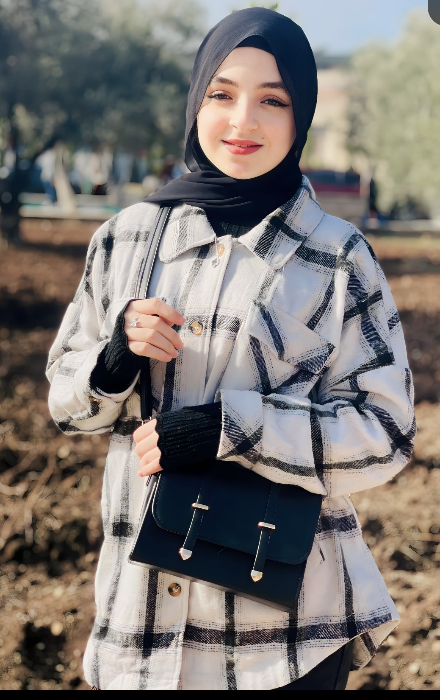
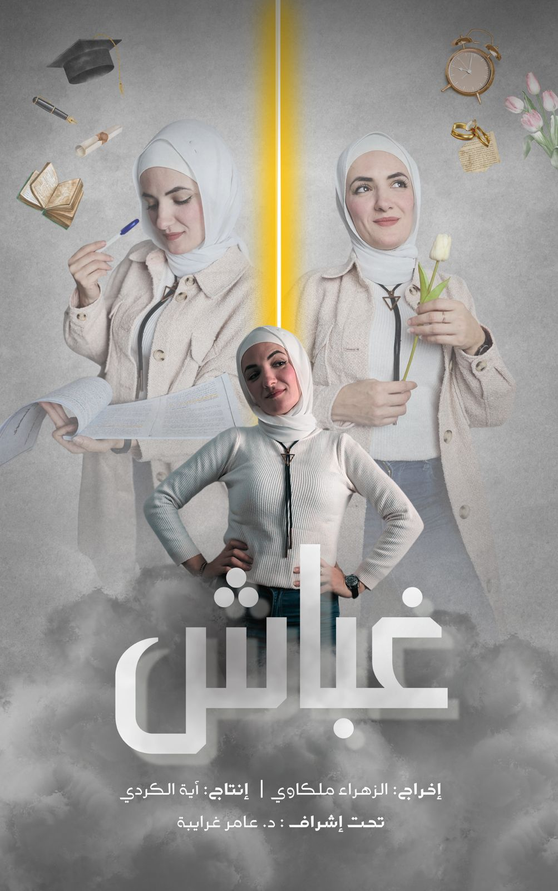
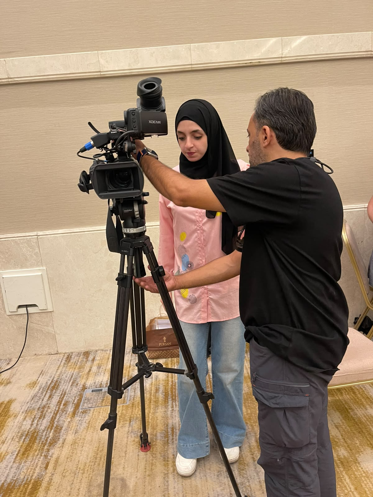
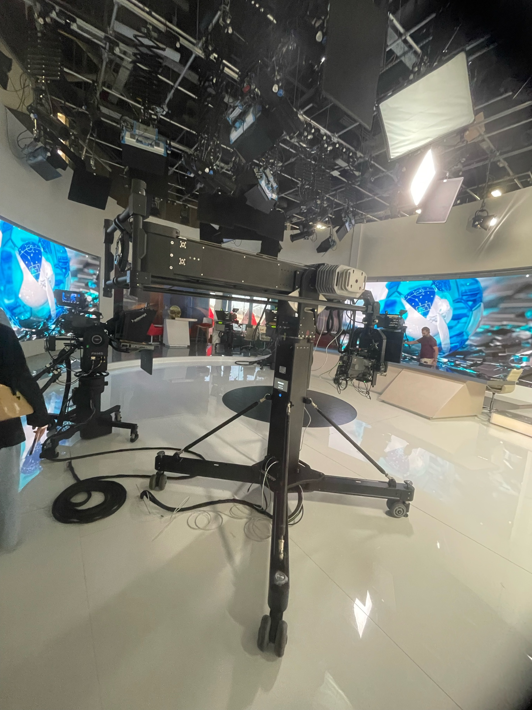
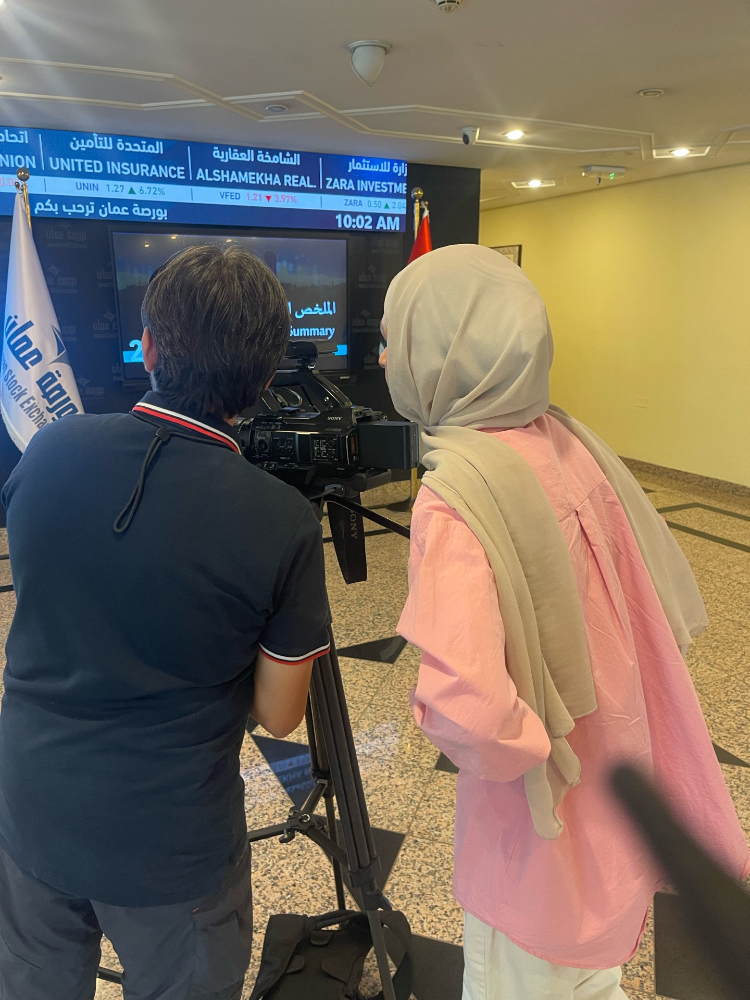
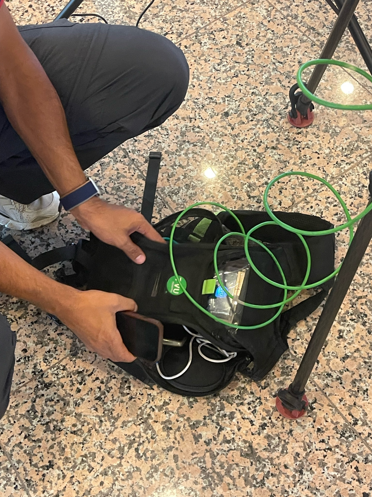

Aya Alkurdi
Film Student / Filmmaker
Exploring the intersection of visual storytelling and cinematic expression. Passionate about creating meaningful narratives through film, photography, and motion design.
Introduction
Click Here


Film Student / Filmmaker
Exploring the intersection of visual storytelling and cinematic expression. Passionate about creating meaningful narratives through film, photography, and motion design.
Click Here
مهمتي هي إنشاء أفلام أصيلة وجذابة بصرياً تتردد مع الجمهور وتحكي قصصاً مهمة. أؤمن بقوة السينما في الإلهام والتحفيز على التفكير وخلق روابط معنوية بين الناس.
أنا طالبة أفلام متحمسة ومخرجة أفلام ناشئة مكرسة لاستكشاف أعماق السرد البصري. بخلفية في التصوير السينمائي والفنون البصرية، أجمع بين الخبرة التقنية والرؤية الإبداعية لإنتاج محتوى سينمائي مقنع. يمتد عملي عبر الأفلام الوثائقية والسردية والتجريبية، مع التركيز دائماً على السرد الإنساني الأصيل والتكوين البصري المذهل.
من خلال دراستي ومشاريعي المستقلة، طورت أسلوباً بصرياً مميزاً يؤكد على الإضاءة الطبيعية والتكوين المدروس والعمق العاطفي. أنا باستمرار أدفع حدود حرفتي، وأجرب تقنيات وطرق سرد جديدة.
السينما هي لغتي. من خلال العدسة، أستكشف تعقيدات التجربة الإنسانية - لحظات الضعف والانتصار والجمال الهادئ التي تحدد حياتنا. أنجذب إلى القصص التي تطعن في الأعراف وتكشف حقائق أعمق حول العالم من حولنا.
نهجي في صناعة الأفلام متجذر في الأصالة والشاعرية البصرية. أعتقد أن كل إطار يجب أن يخدم القصة، وكل لقطة يجب أن تثير العاطفة. سواء كنت أعمل مع موضوعات وثائقية أو سرديات خيالية، أسعى لإنشاء عمل يبقى في ذهن المشاهد بعد انتهاء الأفلام بوقت طويل.
Click Here





Professional Practice
Field Training – AlMamlaka TV
أتممت تدريبي الميداني في قناة المملكة كجزء من دراستي في إنتاج الأفلام. أتاحت لي هذه التجربة الانتقال من المعرفة الأكاديمية إلى بيئة تلفزيونية احترافية، والتعرّف عن قرب إلى إيقاع العمل اليومي ومتطلبات الصورة التلفزيونية.
For more videos, click here
About the Training
خلال التدريب، تعلّمت كيف تتحول الفكرة إلى صورة دقيقة ضمن وقت محدد وفريق متكامل. ساعدني العمل في بيئة المملكة على تطوير حسّ عملي في التعامل مع الكاميرا، اختيار الكادر، وفهم العلاقة بين الصورة والإضاءة وحركة المشهد.
Department
تدربت ضمن قسم التصوير والكاميرا، وشاركت في متابعة التفاصيل البصرية التي تمنح كل لقطة وضوحها وإيقاعها وشخصيتها.
What I Learned
Practical Experience
هنا أستطيع إضافة وصف للمهام التي شاركت فيها خلال التدريب، مثل طبيعة التغطيات، التحضير للتصوير، التعاون مع فريق الكاميرا، أو أي تجربة ميدانية ساهمت في تطوير مهاراتي.
Editable space for specific assignments and behind-the-scenes experiences.
My Experience
مساحة بصرية لإضافة صور التدريب، الاستوديو، الكاميرات، المعدات، واللحظات خلف الكواليس.



